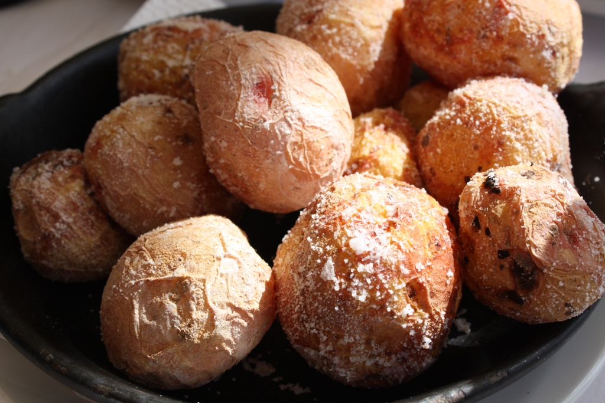

Escaldón

Escaldón by Javier Lastras
Description
Escaldón is a traditional meal from the Canary Islads. Usually served along with dry fruits and palm honey
Ingredients
- Gofio (rosted meal)
- Fish Broth
- Grilled Porc Ribs
- Spicy Mojo
- optional: onion
Steps
- Warm the Fish Broth
- Add enought Gofio until it gets sticky
- Add the meat from the Grilled Ribs
- Add onion to your preference
- Serve with Spicy or green Mojo